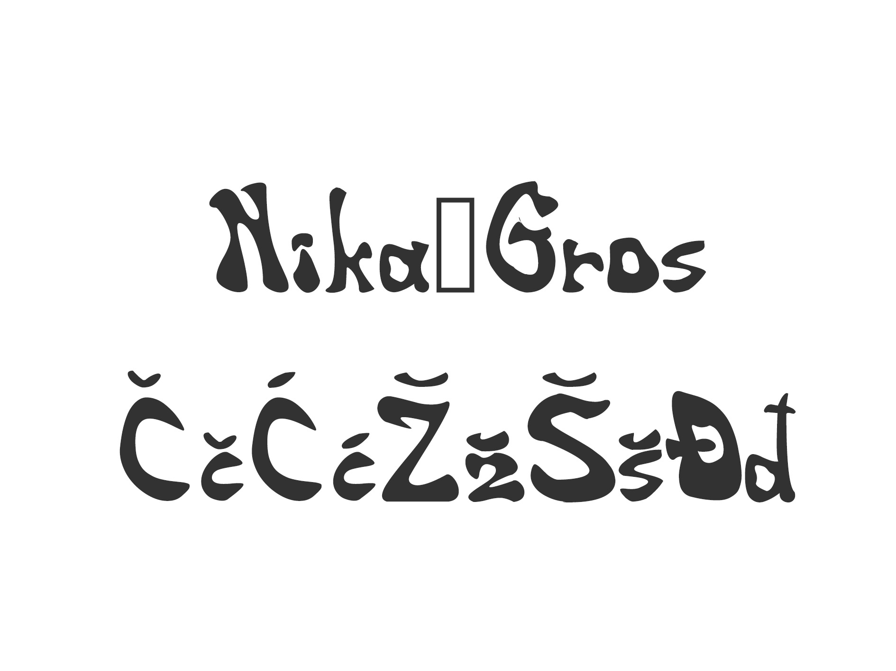
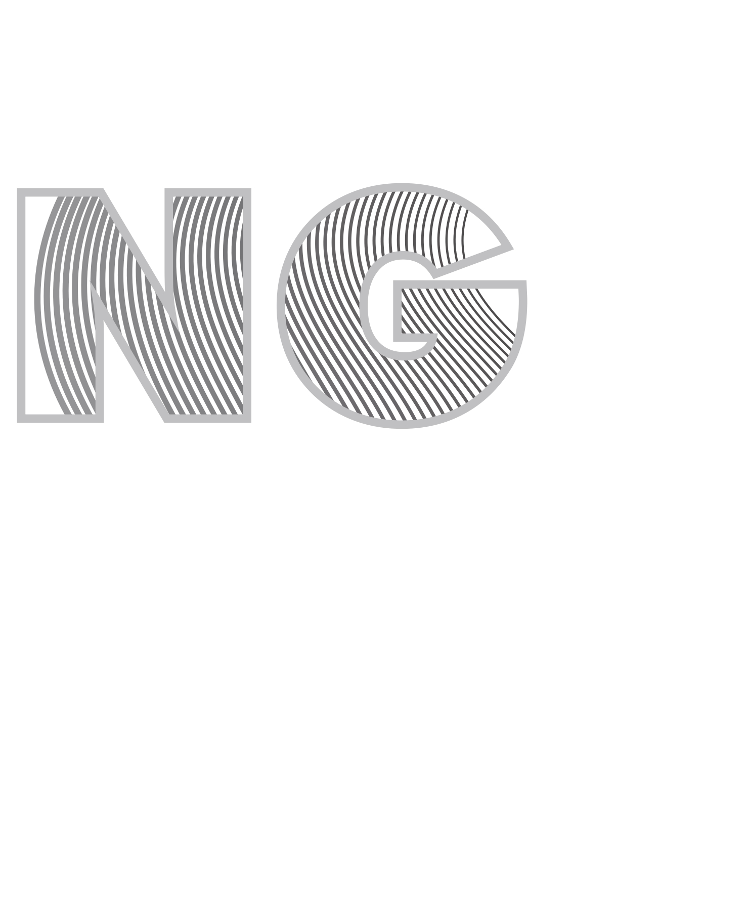
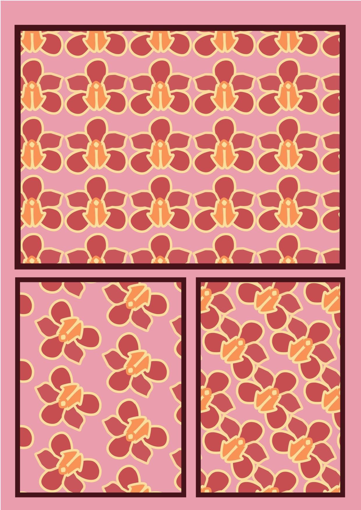
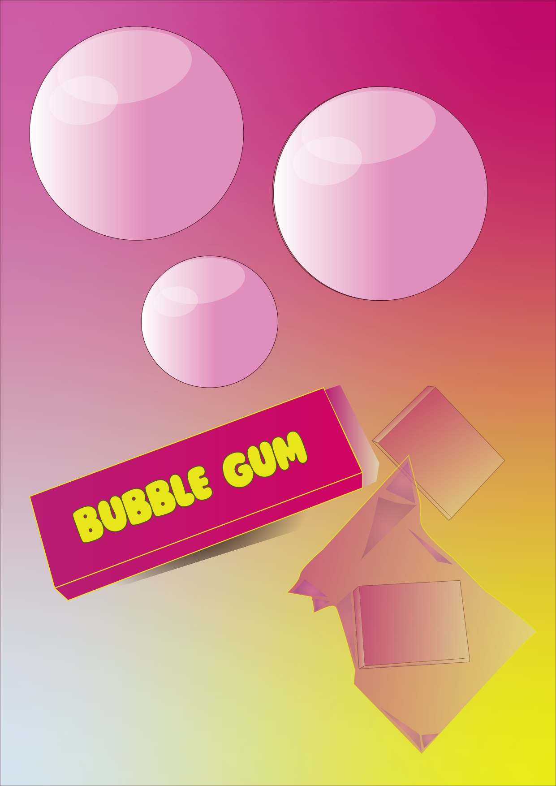
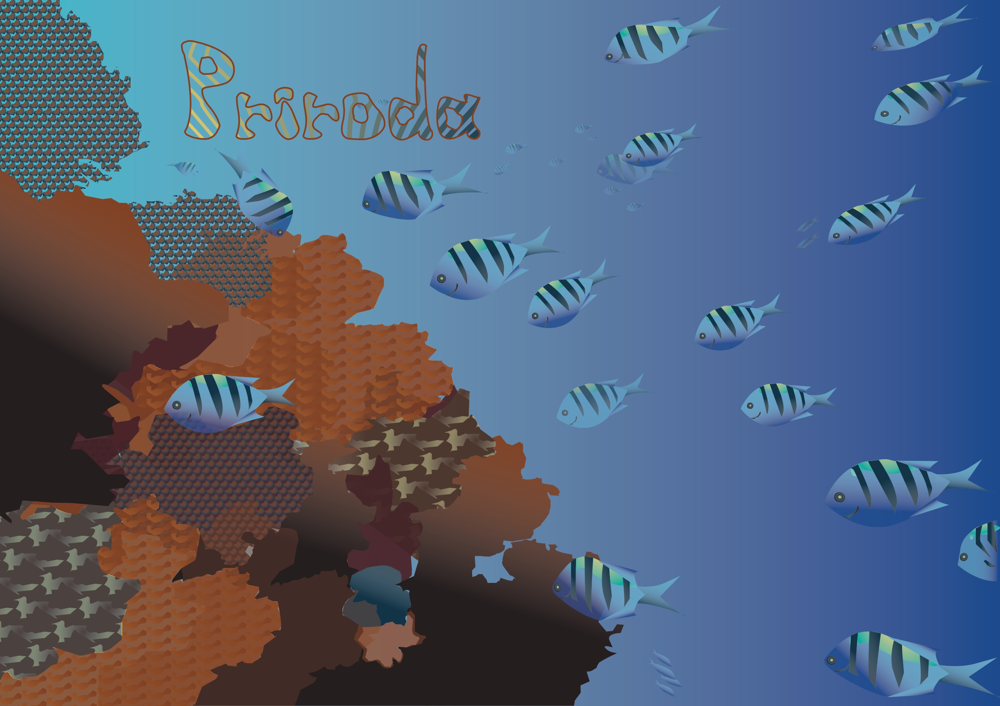
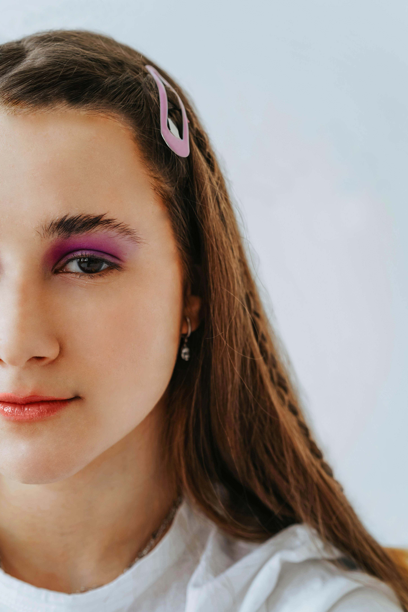
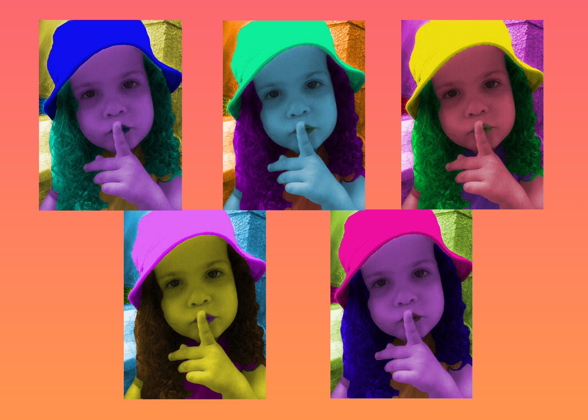

Nika Gros
DIGITALNI MULTIMEDIJ- MOJE VJEŽBE
Listaj prema dolje i pogledaj moje radove ako želiš :3
Vježba 1- izrada fonta
u ovoj vježbi sam napravila vlatiti font

Vježba 2- bezierova krivulja
u ovoj vježbi sam maskirala svoje inicijale berierovom krivuljom

Vježba 3- boja, transformacija, uzorci
u ovoj vježbi sam napravila svoje uzorke pomoću različitih alata

Vježba 4- složeni objekti, gradijenti, transparencija
u ovoj vježbi sam ilustrirala žvakaće gume

PRVI PROJEKTNI ZADATAK
trebala sam ilustrirati dobivenu sliku koristeći sve alate iz prijašnjih vježbi

Vježba 5- retuširanje
u ovoj vježbi sam se koristila alatima za retuširanje slika

Vježba 6- koloriranje
u ovoj vježbi sam kolorirala jednu sliku više puta

Vježba 7- fotomontaža
u ovoj vježbi sam napravila fotomontažu selektiranjem dijelova drugih slika

DRUGI PROJEKTNI ZADATAK
napravila sam fotomontažu uz korištenje svih gore navedenih alata